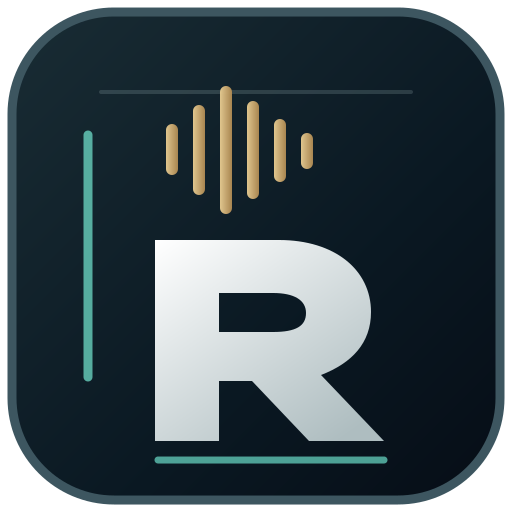

AUDIO WORKSPACE
Digitalna obrada koja se može provjeriti.
Lokalni laboratorij omogućuje rad s digitalnim signalom, usporedbu rezultata i izvoz WAV datoteka s provjerom integriteta.
IMPLEMENTIRANO U LOKALNOM TESTU
RAW.REMOTE AUDIO WORKSTATIONOd pripreme sesije do gotovog digitalnog mastera. RAW razvijamo kao mjesto na kojem se precizan audio rad i udaljeni pristup studijskoj opremi spajaju u jedno iskustvo.
Konceptualni prikaz sučelja · nije snimka aktivnog fizičkog studija
PLATFORMA
RAW nastaje za producente, mix i mastering inženjere kojima je važan svaki detalj procesa — od session managementa do provjerljivog izvoza zvuka.
Lokalni laboratorij omogućuje rad s digitalnim signalom, usporedbu rezultata i izvoz WAV datoteka s provjerom integriteta.
IMPLEMENTIRANO U LOKALNOM TESTURazvijamo siguran pristup terminima, projektima i profesionalnim analognim uređajima iz vlastitog radnog prostora.
Fizička integracija u razvojuJasan pregled projekta, racka, postavki uređaja, snimljenih verzija i pripreme za sljedeću sesiju.
Razvoj i testiranjeWORKFLOW
Naš cilj je zadržati kreativnost u prvom planu. Tehnički koraci trebaju biti jasni, mjerljivi i sigurni.
Otvori projekt, pripremi audio datoteku i složi svoj signalni lanac.
Radi u digitalnom laboratoriju, a u budućnosti i kroz povezanu studijsku opremu.
Usporedi postavke, razine, izlaz i tehničku kvalitetu materijala.
Spremi rezultate i pripremljene verzije kada je obrada dovršena.
RAW DESKTOP
RAW se razvija kao desktop iskustvo za Windows i macOS. Instalacijski paketi prvo prolaze privatno beta testiranje — javni download otvaramo tek nakon sigurnosne i funkcionalne provjere.
Desktop aplikacija za Windows računala.
Priprema beta instalacije
Preuzmi za Windows Preuzimanje uskoroRAW desktop za Mac računala.
Priprema beta instalacije
Preuzmi za Mac Preuzimanje uskoroODABERI SVOJU VERZIJU
Odaberi Windows ili macOS, verziju sustava i procesor. Prikazat ćemo odgovarajuću instalaciju i njezin status.
Privatno testiranje — javna preuzimanja nisu dostupna.
Monterey znači macOS 12. Noviji Macovi koriste zasebnu verziju za macOS 13 i više. Za iPhone/iPad potreban je drugi tip aplikacije, ne Mac .dmg.
Privatna beta: dostupnost instalacija ne znači da je dovršena integracija fizičkog studija ni produkcijska naplata. Prije javne objave paketi moraju biti potpisani, testirani i odobreni.
MORE THAN A WORKSTATION
RAW gradimo korak po korak, s naglaskom na kvalitetu zvuka, kontrolu i povjerenje.
Natrag na početak ↑